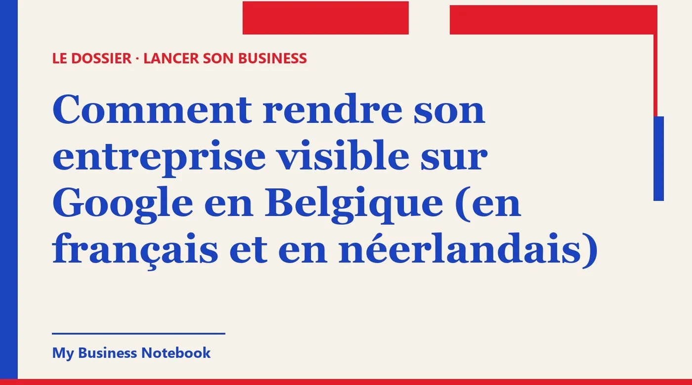

Comment rendre son entreprise visible sur Google en Belgique (en français et en néerlandais)
Vous avez un numéro d'entreprise, une vitrine ou un savoir-faire, et Google ne vous montre pas. En Belgique, il faut en plus être trouvé en français et en néerlandais. Voici ce que Google permet vraiment pour une fiche bilingue, les annuaires belges qui comptent, le rôle de la BCE et la façon d'obtenir des avis, pour tout commerce ou indépendant.

La réponse courte
Pour rendre son entreprise visible sur Google en Belgique, il faut une seule fiche Google validée et complète, les mêmes coordonnées partout (Google, Pages d'Or, votre site, la BCE), et des avis récents. La langue se joue surtout autour de la fiche : votre site, vos annuaires, vos réponses aux avis.
La Belgique ajoute une difficulté que la France ne connaît pas. Un client de Schaerbeek peut chercher « coiffeur », son voisin « kapper ». Si vous ne parlez qu'à l'un des deux, vous laissez l'autre à la concurrence.
Comment mettre son entreprise visible sur Google, gratuitement
La fiche d'établissement Google (Google Business Profile) ne coûte rien. Google l'écrit dans son aide : vous pouvez ajouter ou revendiquer votre établissement « sans frais ». Toute personne qui vous vend une « inscription sur Google » vous vend donc un service, pas la fiche.
C'est cette fiche qui s'affiche quand quelqu'un tape « boulangerie Ixelles » ou « électricien Liège » : la carte, les horaires, le bouton pour appeler, les avis.
Mettre son entreprise sur Google Maps, étape par étape
- Cherchez d'abord votre nom sur Google Maps. Une fiche existe parfois déjà. Si elle n'est pas validée, vous la revendiquez avec « Revendiquer cet établissement ». Si quelqu'un d'autre la gère, vous pouvez lui demander de vous en transférer la propriété.
- Sinon, créez-la depuis business.google.com/add, avec le nom exact de votre enseigne.
- Choisissez une catégorie principale précise. Google précise que les catégories choisies ont une incidence sur votre classement local, et vous pouvez en ajouter jusqu'à neuf autres.
- Validez la fiche. Selon les cas : appel ou SMS, e-mail, appel vidéo ou code par courrier. L'examen prend jusqu'à cinq jours ouvrés, et un code postal arrive généralement sous 14 jours.
Vous travaillez chez vos clients (plombier, aide à domicile, coach) ? Google vous demande alors de supprimer l'adresse et d'indiquer une zone desservie : jusqu'à 20 zones, en restant idéalement dans un rayon de deux heures de trajet.
Remplir la fiche comme un client la lit
Une fiche validée mais vide ne vous fait pas remonter. Horaires (jours fériés compris), téléphone, site, photos réelles de votre local et de votre travail : chaque champ vide est une question que le client ne vous posera pas, il ira voir ailleurs.
La description compte aussi. Google la limite à 750 caractères, sans lien ni code HTML, et sans prix ni promotions. Dites ce que vous faites, pour qui, dans quelle commune.
Une fiche en français et en néerlandais : ce que Google permet vraiment
C'est la question que tout le monde se pose à Bruxelles, et la réponse surprend : on ne double pas sa fiche. Les consignes de Google sont claires, il ne doit y avoir qu'une seule fiche par établissement. Une fiche « FR » et une fiche « NL » pour le même magasin, c'est un doublon.
Le nom : une seule langue, celle de votre enseigne
Google interdit aussi de répéter le nom de l'établissement dans plusieurs langues, même s'il apparaît ainsi sur votre devanture. « Boulangerie Dupont / Bakkerij Dupont » n'est donc pas accepté. Le nom doit correspondre au nom réel que vos clients connaissent, tel qu'il figure sur votre vitrine, votre site et vos documents.
Si votre enseigne officielle est un seul nom, gardez-le. N'y ajoutez pas « kapper » ou « coiffeur » pour attraper les deux publics : ajouter des informations inutiles au nom peut mener à la suspension de la fiche.
Alors où parler néerlandais ?
Nous n'avons trouvé, dans l'aide de Google, aucun champ prévu pour une deuxième version linguistique de la fiche. Le bilinguisme se construit donc autour d'elle :
- Votre site, avec une vraie page en néerlandais, relue par quelqu'un dont c'est la langue. C'est le lien que Google affiche sur votre fiche.
- Vos réponses aux avis, dans la langue du client. Un avis en néerlandais mérite une réponse en néerlandais.
- Vos annuaires, dans leur version néerlandophone quand elle existe (on y revient juste après).
- Vos photos, qui n'ont pas de langue. Un bel atelier se comprend à Gand comme à Namur.
Un conseil : ne traduisez pas votre site mot à mot avec un outil automatique sans relecture. Une phrase bancale rassure moins qu'une page courte et juste.
Pages d'Or, Gouden Gids : comment se faire connaître sur internet au-delà de Google
Google n'est pas le seul endroit où l'on vous cherche. L'annuaire historique belge existe en trois versions : pagesdor.be en français, goudengids.be en néerlandais et goldenpages.be en anglais. Le site propose d'y enregistrer gratuitement son entreprise.
Il y a aussi les cartes des téléphones : Plans d'Apple sur les iPhone, Bing pour ceux qui l'utilisent, et les plateformes propres à votre métier (réservation pour les restaurants, devis pour les artisans).
La règle d'or : les mêmes coordonnées, au caractère près
Nom, adresse, téléphone : écrivez-les exactement de la même façon partout. « Chaussée de Wavre 120 » ici, « Chée de Wavre 120 » là, un ancien numéro de GSM ailleurs : ces écarts brouillent votre identité pour les moteurs de recherche et pour les clients.
À Bruxelles, l'adresse a deux noms officiels (Chaussée de Wavre, Waversesteenweg). Choisissez une forme par langue et tenez-vous-y, plutôt que de mélanger au hasard.
Mieux vaut cinq annuaires bien tenus que quarante fiches oubliées. Notez dans un tableau où vous êtes inscrit et avec quel identifiant : le jour où vous déménagez, vous saurez quoi corriger.
La BCE : la fiche publique que vos clients professionnels consultent
Votre entreprise a déjà une fiche publique, que vous le vouliez ou non : celle de la Banque-Carrefour des Entreprises. Le moteur BCE Public Search permet à n'importe qui de chercher une entreprise par numéro, par nom, par activité ou par adresse.
Un client professionnel qui hésite y vérifie souvent que vous existez bien. Contrôlez-la : dénomination, adresse, activités. Si une information est fausse ou dépassée, faites-la corriger avant de démarcher qui que ce soit.
Ce que votre site doit afficher en Belgique
Le SPF Économie rappelle que le site d'une entreprise doit mentionner notamment son nom, son adresse, une adresse e-mail pour la joindre et son numéro d'entreprise (dix chiffres commençant par 0 ou 1). Si vous êtes assujetti à la TVA, ajoutez le numéro de TVA (BE suivi du numéro d'entreprise).
Le SPF précise que ces obligations valent aussi pour une page Facebook. Au passage, c'est un signal de sérieux pour vos visiteurs : une entreprise qu'on peut retrouver dans la BCE inspire plus confiance.
Comment se faire connaître rapidement : les avis
Ce qui fait bouger une fiche le plus vite, ce sont les avis de vrais clients. Google propose de créer un lien ou un QR code pour les demander : imprimez-le près de la caisse, glissez-le dans votre e-mail de fin de chantier.
Une limite ferme : Google interdit d'offrir un avantage (produit gratuit, réduction) en échange d'un avis, ou pour faire retirer un avis négatif. Demandez simplement, au bon moment, à ceux qui sont contents.
Répondez à tous, de façon aimable et professionnelle. Face à une critique, Google conseille de reconnaître les erreurs éventuelles, sans endosser ce qui n'est pas de votre fait. Un client qui lit votre réponse juge surtout votre calme.
Comment se faire connaître localement, dans les deux communautés
La visibilité en ligne ne remplace pas la rue. Dans une commune, les premiers clients viennent souvent des voisins, avant Google.
- Présentez-vous aux commerces voisins et aux indépendants complémentaires. Un fleuriste et un traiteur qui se recommandent se partagent des clients pendant des années.
- Rejoignez l'association de commerçants de votre quartier et les groupes de la commune. Soyez utile avant d'être commercial.
- Affichez les deux langues en vitrine si votre clientèle est mixte : horaires, « on parle néerlandais », « wij spreken Frans ». C'est simple et ça se remarque.
- Choisissez un seul réseau social et publiez régulièrement. La régularité compte plus que la perfection.
Comment trouver des clients avec Google
Google ne sert pas qu'à être trouvé. C'est aussi une liste de clients potentiels : tapez « restaurant Etterbeek » et vous avez sous les yeux des dizaines d'entreprises qui pourraient avoir besoin de vous, avec leur site et leur téléphone.
La méthode reste la même : une cible précise (un métier, une zone), une liste d'une trentaine d'entreprises, un message court qui parle de leur situation, une ou deux relances. Et comme le prospect tapera votre nom avant de répondre, votre fiche doit être prête avant le premier envoi.
Ce que dit l'APD sur l'e-mail de prospection
En principe, le Code de droit économique interdit la publicité par e-mail sans consentement préalable. L'Autorité de protection des données rappelle une exception utile : le consentement n'est pas requis quand le destinataire est une personne morale et que l'adresse utilisée est impersonnelle, du type info@.
Dans tous les cas, chaque message doit informer clairement du droit de refuser les publicités suivantes, et offrir un moyen simple de le faire par voie électronique. Une adresse nominative, prenom@entreprise.be, reste une donnée personnelle : lisez la recommandation de l'APD avant d'écrire à des personnes nommément.
L'outil qui tient tout ça à jour pour vous
Une fiche Google, deux langues, les Pages d'Or, la BCE à vérifier, des avis à suivre et une liste de prospects : à la main, on décroche au bout de trois semaines. C'est pour ça que nous recommandons Kaptor, une plateforme pensée pour les petites entreprises.
Kaptor
Kaptor rassemble dans un seul espace ce qu'on fait d'habitude avec plusieurs outils :
- Annuaires : votre entreprise inscrite sur les annuaires qui comptent pour votre pays et votre métier (plus de 120 référencements), les mêmes coordonnées partout, un suivi fiche par fiche et une alerte quand une information est périmée.
- Fiche Google : aide pour la créer ou la revendiquer, signalement des champs manquants, et de quoi solliciter puis suivre vos avis.
- Prospection : des entreprises par métier et par zone, avec leurs coordonnées, classées par l'IA de la plus chaude à la plus froide, et un suivi de « à contacter » jusqu'à « gagné ».
- E-mails : envoyés depuis votre propre adresse, avec relances automatiques et désinscription incluse. Rien ne part sans votre validation.
- Site ou blog : pas de site ? Kaptor génère un site vitrine avec formulaire de contact. Déjà un site ? Il génère un blog qui renvoie vers lui.
L'espace gratuit permet d'essayer. Les forfaits commencent à 89 $ par mois (Starter), puis 149 $ (Growth) et 499 $ (Agency), facturés en dollars et sans engagement.
Où vos clients belges vous trouvent-ils, aujourd'hui ?
L'audit gratuit de Kaptor cherche votre entreprise sur les annuaires de votre pays et vous montre où elle manque. Sans carte bancaire, sans inscription. Ensuite, Kaptor peut soumettre les fiches manquantes et les garder à jour.
Lancer mon audit gratuitPour aller plus loin : vous lancez votre activité à côté d'un emploi ? Lisez comment trouver des clients quand on est indépendant complémentaire.
Questions fréquentes
Comment référencer son entreprise sur Google gratuitement ?
Créez ou revendiquez votre fiche d'établissement sur business.google.com/add : Google indique que c'est sans frais. Remplissez tous les champs, validez la fiche, puis demandez des avis à vos clients satisfaits.
Peut-on avoir une fiche Google en français et une autre en néerlandais ?
Non. Google n'autorise qu'une seule fiche par établissement, et interdit de répéter le nom dans plusieurs langues, même si votre devanture est bilingue. Le néerlandais se travaille sur votre site, vos annuaires et vos réponses aux avis.
Combien de temps faut-il pour apparaître sur Google Maps ?
La fiche se crée en quelques minutes. Selon Google, l'examen de la validation prend jusqu'à cinq jours ouvrés, et un code envoyé par courrier arrive généralement sous 14 jours.
Comment mettre son entreprise sur les Pages d'Or ?
Le site pagesdor.be propose d'enregistrer gratuitement son entreprise. La même base existe en néerlandais (goudengids.be) et en anglais (goldenpages.be). Reprenez exactement les coordonnées de votre fiche Google.
Mon adresse privée va-t-elle apparaître sur Google ?
Pas si vous vous déplacez chez vos clients. Google vous demande dans ce cas de supprimer l'adresse et d'indiquer une zone desservie, jusqu'à 20 zones.
Peut-on envoyer des e-mails de prospection à des entreprises en Belgique ?
Oui dans certains cas : l'APD rappelle que le consentement n'est pas requis vers une personne morale utilisant une adresse impersonnelle (info@). Chaque message doit permettre de refuser simplement les envois suivants.
Sources officielles
- Aide Google Business Profile : ajouter ou revendiquer son établissement : la fiche est gratuite, revendication d'une fiche existante.
- Aide Google Business Profile : valider son établissement : méthodes de validation et délais.
- Google : consignes relatives à la représentation de votre établissement : une fiche par établissement, noms bilingues non autorisés.
- Aide Google Business Profile : modifier votre fiche : description de 750 caractères, catégories.
- Aide Google Business Profile : zones desservies : masquer l'adresse, 20 zones au maximum.
- Aide Google Business Profile : obtenir des avis et y répondre : lien et QR code, avantages interdits.
- SPF Économie : BCE Public Search : consultation publique des données de la Banque-Carrefour des Entreprises.
- SPF Économie : informations obligatoires sur le site web de votre entreprise : numéro d'entreprise, TVA, pages Facebook.
- business.belgium.be : créer une entreprise individuelle : inscription à la BCE et numéro d'entreprise.
- Autorité de protection des données : recommandation 01/2025 sur le marketing direct : consentement, exception pour les personnes morales, droit d'opposition.
- Indépendant complémentaire : comment trouver des clients avec quelques heures par semaine
- Devenir indépendant en Suisse : comment se faire connaître localement
- Comment se faire connaître quand on ouvre une entreprise : le plan des 30 premiers jours
- Travailleur autonome au Québec : comment se faire connaître et décrocher ses premiers clients
- Auto-entrepreneur : comment trouver des clients quand on n'a pas de réseau
- Trouver des clients avec l'IA : ce qui marche vraiment pour une petite entreprise